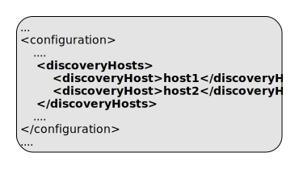
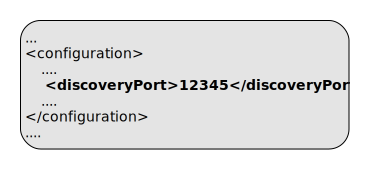
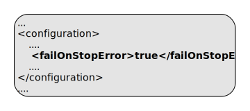
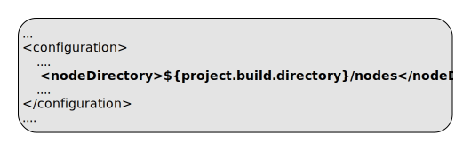
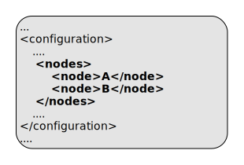
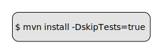

ep:stop-nodes
Full name:
com.tibco.ep:ep-maven-plugin:1.5.0-SNAPSHOT:stop-nodes
Description:
Stop and remove nodes.
When executed in clean phase, any errors found will be logged but won't cause the build to fail. When executed in a phase other than clean, a stop failure will fail the build.
Attributes:
- Requires a Maven project to be executed.
Optional Parameters
| Name | Type | Since | Description |
|---|---|---|---|
| <buildtype> | BaseExecuteMojo$BuldType | 1.0.0 |
Build type - DEVELOPMENT or PRODUCTION Determines build type to use when installing nodes and deploying applications. Example use in pom.xml: 
Example use on commandline:  User property is: build. |
| <clusterName> | String | 1.0.0 |
cluster name to append to the node names. Nodes are started with a service name obtained by concatenating the node names and the cluster name. For example with a node name of A plus a cluster name of test results in a service name of A.test. Example use in pom.xml:  Default value is: ${project.artifactId}. |
| <discoveryHosts> | String[] | 1.0.0 |
List of host names for the client discovery. This is used on each administration client invocation. Example use in pom.xml:  |
| <discoveryPort> | Integer | 1.0.0 |
Port number for discovery. If not set a random free port is selected and persisted to a file Example use in pom.xml: Example use on commandline:  User property is: discoveryPort. |
| <discoveryPortFile> | File | 1.0.0 |
Filename to be used to store generated discovery port Example use in pom.xml:  Default value is: ${project.build.directory}/discovery.port. |
| <environmentVariables> | Map | 1.0.0 |
Environment variables - these environment variables are passed through to created processes. Example use in pom.xml: 
Example use on commandline: 
User property is: environmentVariables. |
| <failOnStopError> | boolean | 1.0.0 | Set this to 'false' to ignore errors on node stop
Example use in pom.xml: Example use on commandline:  Default value is: true. User property is: failOnStopError. |
| <ignoreLeaks> | String[] | 1.3.0 |
List of class names to ignore in leak detection. This is processed to a CSV value to include in unit testing and in jar manifest file. Example use in pom.xml:  |
| <installOnly> | boolean | 1.1.0 |
Set this to 'true' to only install nodes Example use in pom.xml: 
Example use on commandline:  User property is: installOnly. |
| <nodeDirectory> | File | 1.0.0 |
Directory to install test nodes. Example use in pom.xml: Default value is: ${project.build.directory}/test-nodes. |
| <nodes> | String[] | 1.0.0 |
List of node names to start ready for test cases to run. If not set, a single node A is used. Example use in pom.xml:  |
| <password> | String | 1.0.0 |
Password Example use in pom.xml:  |
| <productHome> | File | 1.0.0 |
Product home location. This path is resolved in the following way :
Example use in pom.xml: 
Example use on commandline:  User property is: com.tibco.ep.ep-maven.product. |
| <skipRemove> | boolean | 1.0.0 |
Set this to 'true' to skip removing test nodes Example use in pom.xml: 
Example use on commandline:  Default value is: false. User property is: skipRemove. |
| <skipStop> | boolean | 1.0.0 |
Set this to 'true' to skip stopping test nodes Example use in pom.xml: 
Example use on commandline:  User property is: skipStop. |
| <skipTests> | boolean | 1.0.0 |
Set this to 'true' to skip running tests, but still compile them. Example use in pom.xml: 
Example use on commandline: User property is: skipTests. |
| <userName> | String | 1.0.0 |
User name. If not set authentication is by platform credentials Example use in pom.xml:  |
Parameter Details
<buildtype>
Build type - DEVELOPMENT or PRODUCTION
Determines build type to use when installing nodes and deploying applications.
Example use in pom.xml:
Example use on commandline:
- Type: com.tibco.ep.buildmavenplugin.BaseExecuteMojo$BuldType
- Since: 1.0.0
- Required: No
- User Property: build
<clusterName>
cluster name to append to the node names.
Nodes are started with a service name obtained by concatenating the node names and the cluster name. For example with a node name of A plus a cluster name of test results in a service name of A.test.
Example use in pom.xml:
- Type: java.lang.String
- Since: 1.0.0
- Required: No
- Default: ${project.artifactId}
<discoveryHosts>
List of host names for the client discovery.
This is used on each administration client invocation.
Example use in pom.xml:
- Type: java.lang.String[]
- Since: 1.0.0
- Required: No
<discoveryPort>
Port number for discovery. If not set a random free port is selected and persisted to a file
Example use in pom.xml:
Example use on commandline:
- Type: java.lang.Integer
- Since: 1.0.0
- Required: No
- User Property: discoveryPort
<discoveryPortFile>
Filename to be used to store generated discovery port
Example use in pom.xml:
- Type: java.io.File
- Since: 1.0.0
- Required: No
- Default: ${project.build.directory}/discovery.port
<environmentVariables>
Environment variables - these environment variables are passed through to created processes.
Example use in pom.xml:
Example use on commandline:
User property is: environmentVariables.
- Type: java.util.Map
- Since: 1.0.0
- Required: No
<failOnStopError>
Example use in pom.xml:
Example use on commandline:
- Type: boolean
- Since: 1.0.0
- Required: No
- User Property: failOnStopError
- Default: true
<ignoreLeaks>
List of class names to ignore in leak detection. This is processed to a CSV value to include in unit testing and in jar manifest file.
Example use in pom.xml:
- Type: java.lang.String[]
- Since: 1.3.0
- Required: No
<installOnly>
Set this to 'true' to only install nodes
Example use in pom.xml:
Example use on commandline:
- Type: boolean
- Since: 1.1.0
- Required: No
- User Property: installOnly
<nodeDirectory>
Directory to install test nodes.
Example use in pom.xml:
- Type: java.io.File
- Since: 1.0.0
- Required: No
- Default: ${project.build.directory}/test-nodes
<nodes>
List of node names to start ready for test cases to run. If not set, a single node A is used.
Example use in pom.xml:
- Type: java.lang.String[]
- Since: 1.0.0
- Required: No
<productHome>
Product home location. This path is resolved in the following way :
- If property com.tibco.ep.ep-maven.product is set, use that, else
- If environment variable TIBCO_EP_HOME is set, use that, else
- Use localrepository/../product-group/product-artifact/product-version (so default is ~/.m2/product-group/product-artifact/product-version)
Example use in pom.xml:
Example use on commandline:
- Type: java.io.File
- Since: 1.0.0
- Required: No
- User Property: com.tibco.ep.ep-maven.product
<skipRemove>
Set this to 'true' to skip removing test nodes
Example use in pom.xml:
Example use on commandline:
- Type: boolean
- Since: 1.0.0
- Required: No
- User Property: skipRemove
- Default: false
<skipStop>
Set this to 'true' to skip stopping test nodes
Example use in pom.xml:
Example use on commandline:
- Type: boolean
- Since: 1.0.0
- Required: No
- User Property: skipStop
<skipTests>
Set this to 'true' to skip running tests, but still compile them.
Example use in pom.xml:
Example use on commandline:
- Type: boolean
- Since: 1.0.0
- Required: No
- User Property: skipTests
<userName>
User name. If not set authentication is by platform credentials
Example use in pom.xml:
- Type: java.lang.String
- Since: 1.0.0
- Required: No